This slide deck is still under active development. Expect changes before it is finalized.
Learning objectives
Train a CNN on MNIST with the loop from before, and judge its result against baselines
Read training and validation curves, and say which kind of problem a given curve shape indicates
Explain why a training set that is missing cases looks fine on the training curve and fails on validation
Recognize a model that is not learning (stuck at chance) and say whether the learning rate is too small or too large
Explain overfitting as a gap between training and validation, and say what more data, data augmentation, dropout, weight decay, and early stopping each do about it
Explain what batch normalization computes, why training and evaluation behave differently, and what it buys us
Training a CNN
The loop from last time, on real images
The setup
Same pieces as before
A model: an nn.Module
A loss: cross-entropy
An optimizer: Adam
The five-line loop
What is new
Real images: MNIST, 60,000 for training
10,000 more that we never train on
The model is the small CNN we built earlier
The loop, with a check after every epoch
for epoch inrange(num_epochs): model.train()for X, y in train_loader: optimizer.zero_grad() loss = loss_fn(model(X), y) loss.backward() optimizer.step() model.eval() # now measure, without trainingwith torch.no_grad(): val_loss = loss_fn(model(X_val), y_val)
The same loop as last time. The new part is the last three lines: after each epoch, score the model on images it has never trained on
We record the training loss as well, so every epoch gives us two numbers
One healthy run
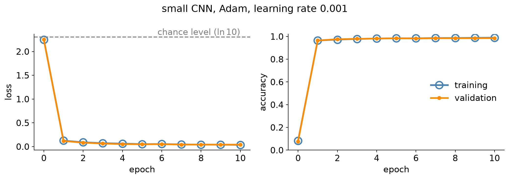
Both losses fall fast, then flatten near zero. Training (hollow circles) and validation (dots) stay on top of each other
It starts at the dashed line: a model that knows nothing is as good as a random guess
About 98.6% of the validation digits are right. This is what “working” looks like
Would we notice if it hadn’t worked?
This run went well, and we could tell, because we plotted it
The loop will happily run for ten epochs on a broken setup and print numbers just the same
The rest of today: what the numbers look like when something is wrong, and what to do about it
Reading the curves
What the numbers are telling us
Is that number good?
The loop prints a number every epoch. Is it good?
“Lower than before” is not an answer: a loss of 0.5 could be excellent or terrible
And a single number cannot tell us why a run is bad, only that it is
The Big Idea
Record training and validation performance after every epoch and plot them together. The shape of the two curves tells us which problem we have.
What each curve tells us
Training curve
Can the model learn at all?
Falling: the optimizer is doing its job
Flat: something is stopping learning
Validation curve
Will it work on new data?
This is the number we actually care about
Compare it to the training curve: the gap is the signal
A baseline: what does knowing nothing score?
How well would we do if we just guess randomly?
For MNIST:
A model that says “10% each” for every digit has loss -\ln(1/10) \approx 2.30
A loss stuck at 2.30 means the model has learned nothing, however many epochs it has run
Accuracy tells the same story: stuck near 10% is chance
What would this look like for a different dataset?
A second baseline: a comparable MLP model
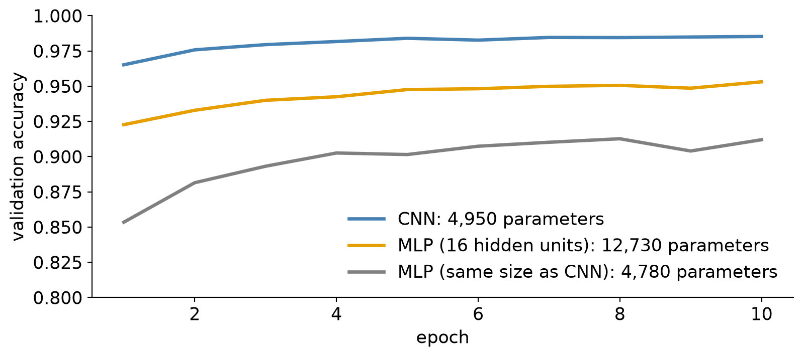
98.6% sounds great. Next to the simplest model we could have used, it is a real improvement
Chance tells us whether a model learned anything. A simple baseline tells us whether it learned enough
What the curves can look like
Training curve
Validation curve
What it usually means
Falls
Falls, close behind
Healthy
Falls
Bad, but only on some inputs
Training data is missing something the test data has
Flat, or barely moving
Flat, or barely moving
Not learning
Falls to nearly zero
Stalls, or gets worse
Overfitting
Falls, slowly
Falls, slowly
Training is slow or fragile
Same MNIST model for every row, changing one thing at a time
The second row is the sneaky one: the training curve looks perfectly healthy. We start there
Sampling
The data decides what the model can learn
A reasonable-sounding plan
Let’s keep the first 70% for training
What could go wrong with this plan?
The first 70% of a file sorted by digit is, near enough, every 0 through 6
The model trains on 41,935 images (digits 0 to 6 only) and we check it on the standard 10,000 validation images, which contain all ten digits
What the curves show
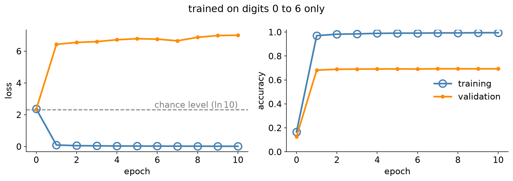
Training looks wonderful: 99.5% accurate, loss near zero
Validation is bad from the first epoch, and it never improves: 69% accurate
This resembles overfitting, but it is different: overfitting gets worse with more training. Here the model was never going to do well
Which digits go wrong?
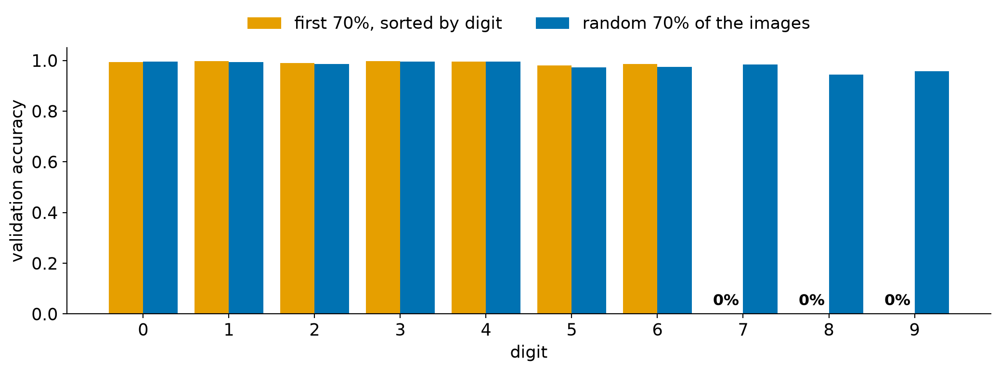
Digits 0 to 6: nearly perfect. Digits 7, 8, and 9: never right
The control, same number of images picked at random, gets every digit above 94%
What is going on
Nothing in the training data ever rewards the model for answering 7, 8, or 9. It has never seen one
The model is not broken. It learned exactly what we showed it, and it is very good at that
One overall number hides it: 69% sounds mediocre, not “three digits are never recognized”
We could dramatically improve it by improving sampling!
Takeaway
The training data has to look like the data the model will face. A model can only be as good as the examples it saw.
Two fixes: random and stratified sampling
Random
Shuffle the data, then split
Every image is equally likely to land in training
Works well when each class has plenty of examples
Stratified
Split within each class: 70% of the 0s, 70% of the 1s, …
Guarantees every class appears in the right proportion
Matters most when a class is rare
The difference between the two is small on MNIST. On a dataset with a 1-in-1000 class it is the difference between seeing that class and not
Check before you train
print(torch.bincount(y_train)) # how many of each class did we keep?print(torch.bincount(y_val))
Two lines, before the first epoch: does every class appear, in roughly the right proportions?
The same idea applies beyond class labels: data collected in one month, on one camera, or from one school may not look like next month’s data
Sampling: what to remember
If training looks great and validation does not, look at which inputs fail, not just at the average
Not learning
The loss that won’t move
The loss won’t move
Ten epochs in, the MNIST loss is still sitting near 2.30. What’s going wrong?
That is the same loss as chance: the model has learned nothing
The optimizer is running and the loss is being computed, but the weights are not getting anywhere
The first knob to try: the learning rate
Learning rate too small
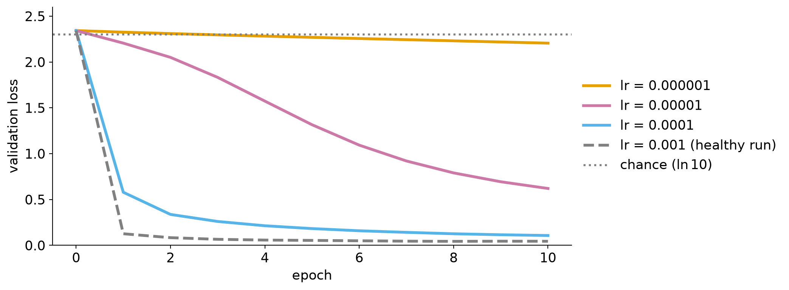
Each step is tiny, so the model is moving in the right direction, very slowly
At 10^{-6}, ten epochs only get the loss from 2.35 to 2.21 (33% accurate)
Learning rate too large
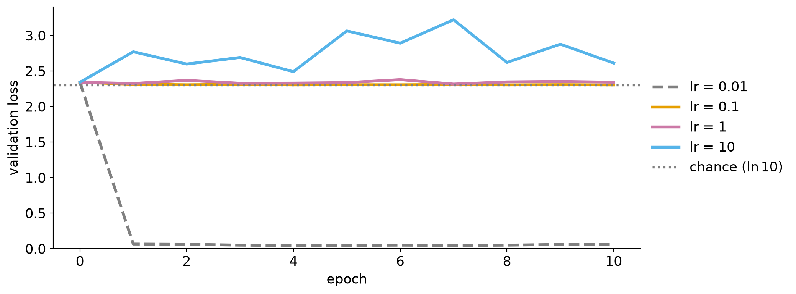
Each step overshoots. The weights bounce around and never settle somewhere useful
At 0.1 and above the loss sits at chance, or gets worse. Same model, same data, same optimizer
Aside: What does a learning rate of 1 mean? What are we doing with our gradient?
Two opposite causes, one symptom
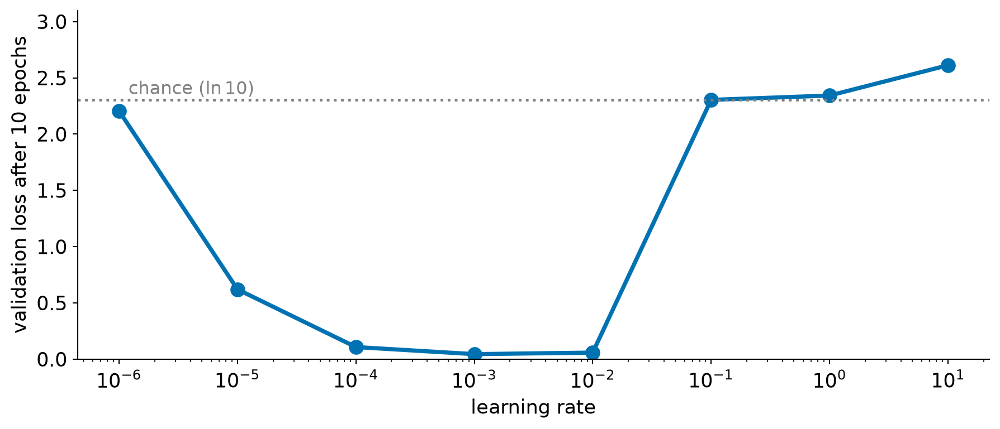
Too small and too large both end up near chance.
Only a narrow band of learning rates works well, and it spans a couple of orders of magnitude, so we search on a log scale, not by nudging a few percent
This is why we test a sweep of them!
It can get worse than chance
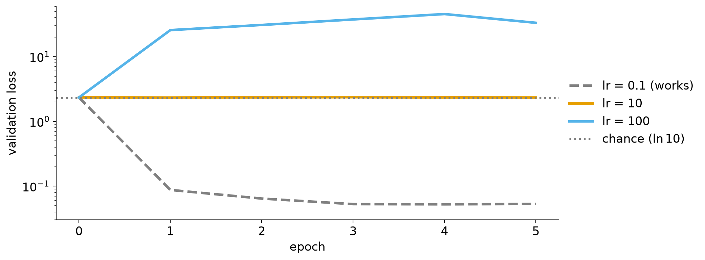
Plain SGD (same CNN) at lr 100: the loss jumps to 25 and keeps growing, ten times worse than chance
Push a little further and the numbers overflow to NaN. Once a loss is NaN, it stays NaN
Takeaway
A loss that will not move often has an incorrect learning rate.
Knowing if it’s too big or two small is the challenge, so try both.
What to try first
Multiply the learning rate by 10, then divide it by 10, and rerun
Look at the first epoch: is the loss moving at all?
Down but slowly means too small
Level or rising means too large
If neither direction helps, the problem might not the learning rate.
Check the loop itself: zero_grad() is called
Check the loss matches the output
Check the labels match the images
Each optimizer has its own sensible range
Adam is forgiving.
plain SGD is not.
Overfitting
Great on the training set, mediocre otherwise
A big model and not much data
431,000 parameters. 1,000 training images.
Same kind of CNN as before, but wider, with a hidden layer, and a hundredth of the data
That is hundreds of parameters for every training image
What will the model do with all that freedom?
What the curves show
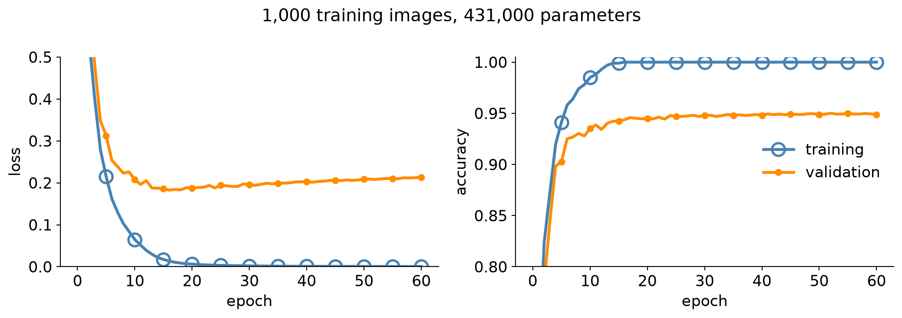
Training loss goes to zero and training accuracy to 100%
Validation levels off near 95%, and validation loss gets worse after about epoch 16
The gap between the two curves is the signal: this is overfitting
What is going on
With enough parameters, the model does not have to find the pattern. It can memorize each training image, quirks and all
Memorizing gets a perfect training score and says little about new digits
The more the model can memorize, the bigger the gap between training and validation
So how do we shrink the gap?
Fix 1: more data
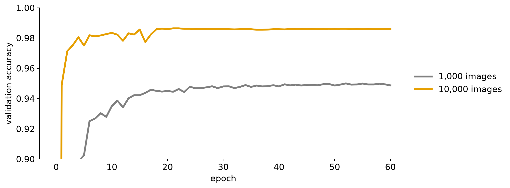
Same model, same loop, ten times the images: validation accuracy goes from 94.9% to 98.6%
It is the most reliable fix there is. It is also the one we usually cannot just do: collecting and labeling data is expensive
Fix 2: make more data out of the data we have
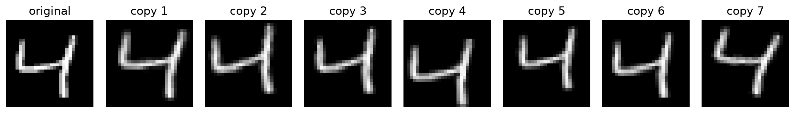
Data augmentation: each time the model sees a training image, randomly shift, rotate, or rescale it a little
Still the same digit, so the label does not change. Every epoch the model sees slightly different versions of the same 1,000 images
Data augmentation: does it help?
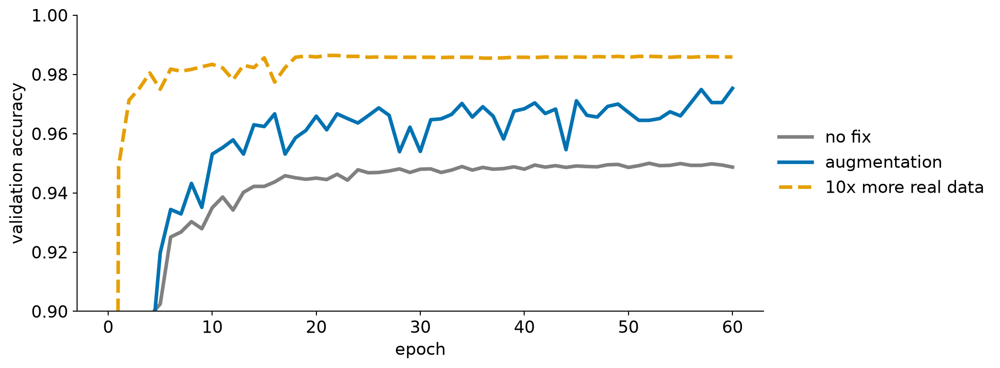
94.9% to 97.5%, without collecting a single new image
Only the training images are altered. Validation images stay exactly as they were
Augmentation: the label has to survive
Fine for digits
Small shifts
Small rotations
Slight zoom in or out
Not fine for digits
Flipping left to right: a mirrored 2 is not a 2
Rotating by 180°: a 6 becomes a 9
Shifting so far the digit leaves the image
The rule: a transformation is safe only if a person would still give the same label
torchvision.transforms.v2 has the usual transforms ready-made: shifts, rotations, crops, flips, color changes, and more
The transform lives in the dataset, so every image the loader hands out gets a fresh random draw
Only the training set is augmented. The validation set uses the plain conversion, so we always measure on the real images
There are also automatic policies (v2.RandAugment, v2.TrivialAugmentWide) that choose the transforms for us
Fix 3: dropout
model = nn.Sequential( ..., # the convolutional layers, as before nn.Flatten(), nn.Linear(1600, 256), nn.ReLU(), nn.Dropout(0.5), # new: during training, zero half the units at random nn.Linear(256, 10),)
Training: every step, each hidden unit is switched off with probability 0.5
No unit can be relied on, so the model cannot hand the memorizing to a few of them
Evaluation: every unit is on. This is why model.train() and model.eval() mattered earlier
so the whole gradient is the old one plus a term proportional to the weight:
\nabla L_{\text{total}} \;=\; \nabla L \;+\; \lambda\, w
The same power rule as w^2 \to 2w. The \tfrac12 in the penalty is there to cancel that 2
The extra term is bigger for bigger weights: large weights get pulled hardest
Breakdown: the update step
Put that gradient into the usual update, w \leftarrow w - \eta\,\nabla L_{\text{total}}, and regroup:
w \;\leftarrow\; w - \eta\,\big(\nabla L + \lambda w\big) \;=\; \underbrace{(1 - \eta\lambda)}_{\text{a little below 1}}\, w \;-\; \eta\,\nabla L
Read the right-hand side as two parts: multiply every weight by a number just below 1 (shrink it), then take the usual gradient step
Hence the name: weights decay unless the data keeps pushing them up
In PyTorch it is one argument: Adam(model.parameters(), lr=1e-3, weight_decay=1e-3)
The tidy “shrink by (1-\eta\lambda)” form is exact for plain SGD. Adam rescales the gradient, so there it is the same idea, not the same formula
Does the penalty distort our loss curves?
Tip
The penalty changes where the optimizer steps, not what we measure.
With weight_decay=..., PyTorch adds the pull to the gradient. The loss we print and plot is still the plain L, with no penalty in it
So validation loss means the same thing as in every other run, and the curves stay comparable
Training loss does end up a little higher than without it: the model is no longer trying to fit every training image perfectly. That is the trade we want
If we add the penalty to the loss by hand instead, log L and the penalty separately, or the plotted loss jumps around with the weights
How much did each fix help?
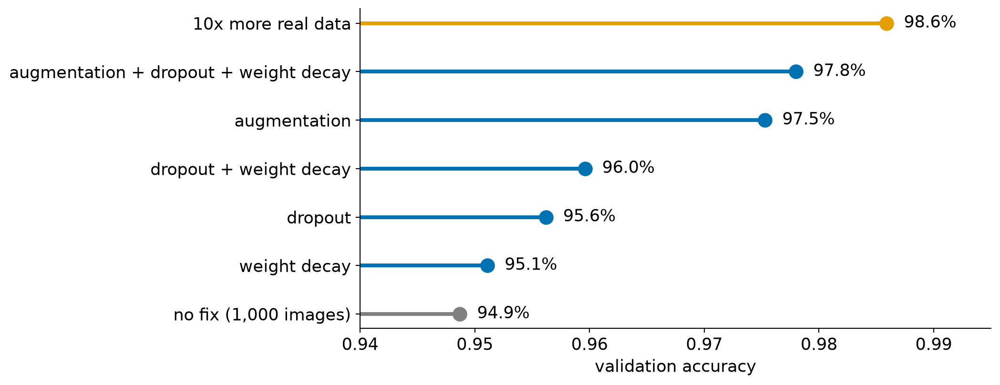
Dropout and weight decay each help a little. Augmentation helps a lot more. Real data helps most
The fixes stack: augmentation with dropout and weight decay comes within a point of ten times the data
One more thing: stop early
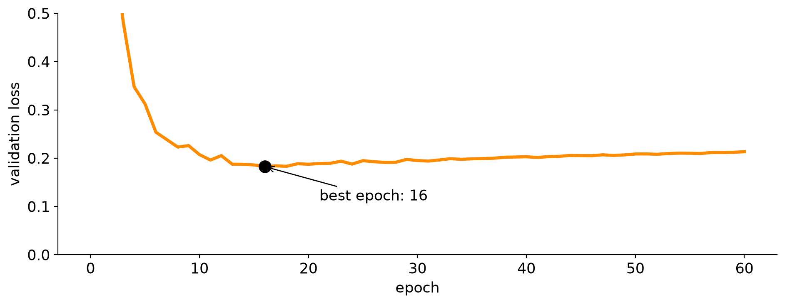
This one is free, and it is the curve-reading from the start of today, put to work: watch the validation loss. When it stops improving, stop training and keep the weights from the best epoch
The longer the model trains past that point, the more it memorizes
Here the loss rises only a little and the accuracy hardly moves. The effect is bigger on a model that overfits harder
The validation set now picks our stopping point, so it is no longer a fully fair test. A separate test set fixes that
Takeaway
More data is the best fix for overfitting. Everything else is a way to get more out of the data we have, or to keep the model from memorizing it.
Slow and fragile training
When depth makes everything harder
Deeper should be better
Same data, same loop. The CNN now has 8 convolutional layers instead of 2
Everything else is as before: Adam, learning rate 0.001, 10 epochs
We compare two activations: sigmoid, and ReLU
What do we expect?
Same network, different activation
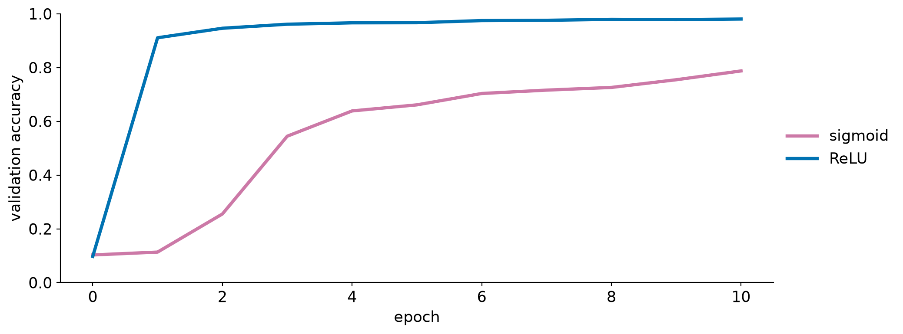
ReLU is above 90% after one epoch. Sigmoid is still near chance (11%) after one, and only starts to climb in the second
After 10 epochs: 98.1% with ReLU, 78.7% with sigmoid. The sigmoid network is not broken, just slow
Why is the sigmoid network slow?
Sigmoid is flat for large inputs, and even at its steepest its slope is only 0.25
The gradient reaches the early layers by passing back through every layer after them. Eight layers of small slopes multiply into a tiny signal
Early layers barely get an update, so training crawls
Can we keep each layer’s numbers in a range where learning is easy?
The Big Idea
Re-center and re-scale each layer’s numbers before passing them on, so every layer receives well-behaved inputs.
Batch normalization: the full definition
For one channel, over one mini-batch of values x_1, \dots, x_m:
Subtract the batch mean and divide by the batch standard deviation: the values now have mean 0 and variance 1
Whatever the previous layer did to the scale, the next layer always sees numbers in the same range
For a conv layer this is done per channel, using every image in the batch and every position in the feature map
Breakdown: step 2, scale and shift outputs
y_i = \gamma\, \hat{x}_i + \beta
Step 1 sends the next layer numbers with mean 0 and variance 1. That might not be the range it works best in
Example: a ReLU zeroes every negative value, so at mean 0 roughly half the outputs are lost. A positive \beta shifts values up so fewer are
\gamma (scale) and \beta (shift) are learned, one pair per channel. They start at \gamma = 1, \beta = 0 (plain normalization), and training moves them
The goal: the layer chooses the range it sends on. At the extreme it can undo the normalization (\gamma = \sigma, \beta = \mu)
Worked example: one channel, a batch of four
x = [2. 4. 6. 8.]
mean = 5, variance = 5
x-hat = [-1.342 -0.447 0.447 1.342] (mean 0.0, variance 1.00)
y = [-1.683 0.106 1.894 3.683] with gamma = 2, beta = 1
Step 1 turns [2, 4, 6, 8] into values centered at 0 with variance 1
Step 2 stretches them by \gamma = 2 and moves them up by \beta = 1
Batch norm in PyTorch
nn.Sequential( nn.Conv2d(8, 8, kernel_size=3, padding=1), nn.BatchNorm2d(8), # one gamma and one beta for each of the 8 channels nn.ReLU(),)
It goes between the convolution and the activation, and it is just another layer
It adds 2 \times channels parameters (\gamma and \beta). In our 8-layer network that is 8 \times 8 \times 2 = 128 more, from 4,258 to 4,386
BatchNorm2d normalizes each channel of a conv layer. For an MLP layer, BatchNorm1d does the same per hidden unit. Sequence models usually use layer norm instead (later)
Training and evaluation behave differently
Which \mu, \sigma^2
Why
model.train()
this batch’s statistics (and a running average is updated)
the batch is all we have
model.eval()
the stored running averages
one image should not depend on its neighbors
This is the train() / eval() difference from last time, and why we switch modes before measuring
Forget model.eval() and predictions change with the other images in the batch
Does it help?
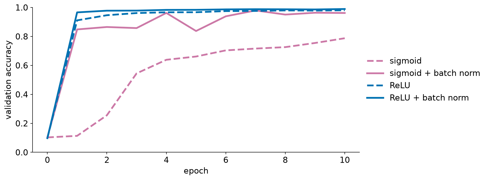
Sigmoid with batch norm: 78.7% to 96.2%, and it is learning from the first epoch
ReLU improves too, from 98.1% to 98.9%
It is not free: ten epochs take 5.7 s with batch norm and 4.1 s without
It also forgives the learning rate
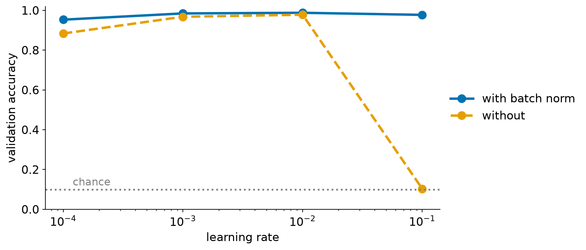
Same 8-layer ReLU network. At learning rate 0.1 the network without batch norm falls to chance. With it, 97.7%
It is also better at the small end: 95.3% against 88.4% at 10^{-4}
The usable range of learning rates gets wider: less fiddling
Takeaway
Batch normalization keeps every layer’s inputs well-scaled. Deep networks then train faster, and the learning rate matters less.
A debugging checklist
Before blaming the model
Is it the model, or the loop?
Training fails. The problem could be in the data, the model, the optimizer, or the loop
That is a lot of places to look, and the curves alone do not say which
We want one quick test that splits “something is broken” from “this is a hard problem”
The test: overfit one batch
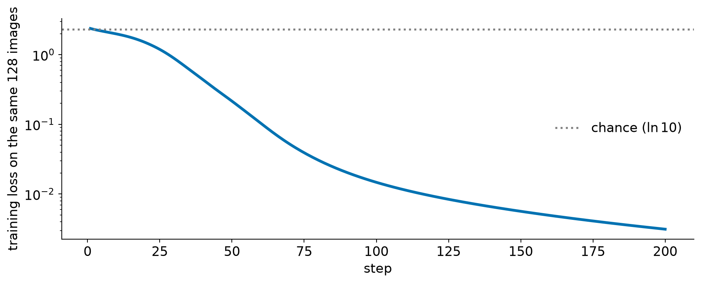
Take one batch of 128 images and train on those same images every step. That is a tiny dataset, and a working model and loop can memorize it: the loss here goes from 2.38 to 0.003 in 200 steps
If it cannot, something is broken: fix that before touching anything else
If it can, the loop basically works, and the trouble is the data, the learning rate, or the model’s capacity
A bug can look like a hard problem
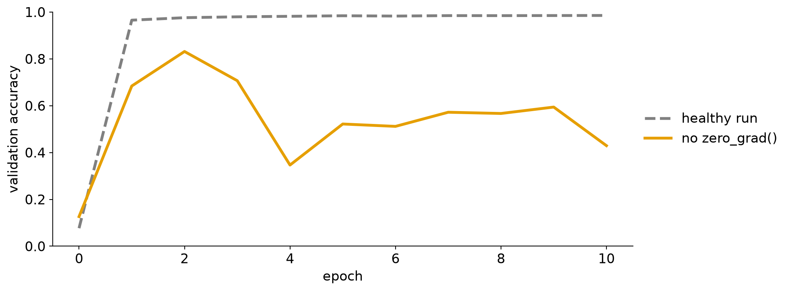
The same CNN, with the optimizer.zero_grad() line removed
Gradients pile up from batch to batch, so each step points the wrong way. Validation accuracy jumps between 35% and 83% and never settles
It resembles a learning rate that is too large. Check the loop before you start changing the learning rate
The usual suspects
Check
How to check it
Labels still match the images
Plot a few training images with their labels
Inputs are scaled
Print the min, max, and mean of one batch
The loss matches the output
CrossEntropyLoss takes raw scores (logits), so there is no softmax layer at the end of the model
zero_grad() is called every step
It should run once per step, before backward()
model.eval() before validating
Results should not change with the other images in the batch
Takeaway
A working model and loop can memorize a tiny dataset, even just 128 images. If yours cannot, it has a bug, so fix that before you tune anything.
Summary
Recap: symptom, curve, first thing to try
What the curves show
Likely cause
First thing to try
Training and validation fall together
Healthy
Compare to a baseline: is it good enough?
Training fine, validation bad on some inputs
Training data is missing cases
Check class counts. Shuffle or stratify before splitting
Both flat, near chance
Learning rate too small or too large (or a bug)
Multiply and divide the learning rate by 10. Overfit one batch
Training near zero, validation stalls or worsens
Overfitting
More data, augmentation, dropout, weight decay, stop early
Both fall, slowly
Deep network, sigmoid, or an unlucky learning rate
ReLU, batch norm
Recap: key ideas
Plot training and validation after every epoch. The gap, and the shape, say which problem you have
Judge a number against baselines: chance, and a simpler model
Change one thing at a time, and look at which inputs fail, not just the average
More data is the best fix for overfitting. The others get more out of the data we have
Before tuning, check the loop: a working one can memorize a tiny dataset